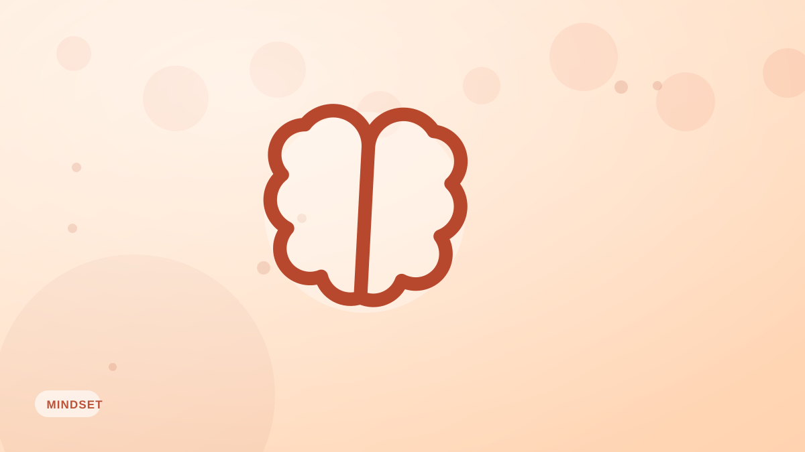

Alimentación consciente: guía para principiantes
>Comer con atención plena te hace disfrutar más de la comida y comer de más con menos frecuencia. Qué es, por qué funciona y cómo practicarla en tu próxima comida.

La alimentación consciente consiste en prestar plena atención a la experiencia de comer —el sabor, la textura y las señales de hambre y saciedad de tu cuerpo— sin juzgar. No es una dieta y no prohíbe ningún alimento. Es una forma de comer que tiende a llevar, casi por sí sola, a comer un poco menos y a disfrutarlo más.
Por qué comer en piloto automático nos sobrealimenta
Cuando comes mientras haces scroll, trabajas o ves la tele, tu cerebro apenas registra la comida. Te pierdes las señales de saciedad, comes más rápido y te sientes menos satisfecho, así que buscas más. La distracción es uno de los motores silenciosos de comer de más.
Las prácticas básicas
- Quita distracciones: deja el móvil y aléjate de las pantallas.
- Ve más despacio: mastica bien y deja el cubierto en la mesa entre bocados.
- Activa los sentidos: fíjate en el olor, el sabor y la textura de la comida.
- Haz una comprobación: párate a media comida y pregúntate cómo de lleno estás.
La escala del hambre
Puntúa tu hambre del 1 (muerto de hambre) al 10 (incómodamente lleno). Intenta empezar a comer sobre un 3–4 y parar sobre un 6–7: satisfecho, no lleno. Esta comprobación sencilla desarrolla la conciencia de las señales reales de tu cuerpo.
Empieza poco a poco
No hace falta que comas todas las comidas con atención plena. Elige una comida al día, o incluso los primeros bocados de cada comida, para practicar. Con el tiempo, esa conciencia se traslada sola.
La alimentación consciente no te dice que comas menos. Solo te ayuda a notar cuándo ya quieres parar.
La alimentación consciente y el registro se complementan: la atención en el momento, más la visión de conjunto que da registrar con Fotocal, te dan instinto e información a la vez.
Ideas clave
- Comer con atención plena es atención total, sin juicios y sin alimentos prohibidos.
- Comer distraído lleva a comidas más rápidas, más grandes y menos satisfactorias.
- Quita distracciones, ve despacio y comprueba hambre y saciedad.
- Empieza con una comida o con los primeros bocados.